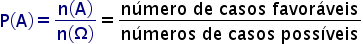

Probabilidade
O estudo da probabilidade é de grande importância para a tomada de decisões em nossa sociedade. Conhecemos como probabilidade a área da matemática que estuda a chance de um determinado evento acontecer.
A probabilidade conta com conceitos importantes, como experimento aleatório, evento, espaço amostral, e eventos equiprováveis. O valor da probabilidade é sempre um número entre 0 e 1 ou uma porcentagem entre 0% e 100%, e é calculado com base na razão entre os casos favoráveis e os casos possíveis.
Definições básicas
Fórmula da probabilidade
Em um fenômeno aleatório, as possibilidades de ocorrência de um evento são igualmente prováveis. Sendo assim, podemos encontrar a probabilidade de ocorrer um determinado resultado através da divisão entre o número de eventos favoráveis e o número total de resultados possíveis:
Sendo P(A): probabilidade da ocorrência de um evento A; n(A): número de casos favoráveis ou, que nos interessam (evento A); n(Ω): número total de casos possíveis.
O resultado calculado também é conhecido como probabilidade teórica. Para expressar a probabilidade na forma de porcentagem, basta multiplicar o resultado por 100.
- Observações:
- A probabilidade pode ser representada como fração, como porcentagem ou como número decimal.
- A probabilidade é sempre um número decimal entre 0 e 1, ou uma porcentagem entre 0% e 100%.
- Se P(A) = 0 então A é um evento impossível.
- Se P(A) = 1 então A é um evento certo.
Experimento aleatório
É o experimento que, ao ser realizado várias vezes nas mesmas condições, ainda sim, gera um resultado imprevisível. Estamos cercados de experimentos aleatórios no nosso cotidiano, por exemplo, ao realizarmos o lançamento de um dado comum, ainda que seja possível calcular a chance de cada um dos resultados ocorrer, é impossível termos, com precisão, o resultado do lançamento. Ao lançarmos o dado uma vez e obtermos, por exemplo, 1 como resultado, ao realizarmos um novo lançamento, respeitando as mesmas condições, o resultado continua sendo imprevisível, ele pode ou não ser 1 novamente.
Ponto amostral
Qualquer resultado possível de um experimento aleatório é denominado um ponto amostral. Usando ainda o exemplo do dado lançado, o lado que cairá para cima pode ser os números 1,2,3,4,5 ou 6, portanto, cada um deles é um ponto amostral.
- Espaço amostral:
O espaço amostral é o conjunto de todos os resultados possíveis de um experimento aleatório, ou seja, dos pontos amostrais, e pode ser representado por conjuntos. Com relação a um dado que é jogado no chão e se deseja saber os possíveis lados que podem cair para cima, o espaço amostral desse experimento é o conjunto “n” : n = {1,2,3,4,5,6}. Portanto, os elementos 1,2,3,4,5,6 são os pontos amostrais.
- Espaços equiprováveis:
É denominado espaço equiprovável quando todos os pontos amostrais possuem a mesma chance de ocorrer, como no caso de uma moeda lançada. A possibilidade de cair com a cara ou coroa voltada para cima é a mesma.
Evento
É qualquer subconjunto do espaço amostral. O evento pode ser representado utilizando-se notação de conjuntos, ou seja, por letras maiúscula. Geralmente o evento é o conjunto de resultados satisfatórios, ou seja, é um subconjunto do espaço amostral que contém os elementos com os quais se calcula a probabilidade
Exemplo: Em um experimento aleatório, será sorteado ao acaso um estado brasileiro. Nesse experimento podemos tirar vários possíveis eventos, por exemplo, podemos pensar no resultado ser um estado do Sul, logo, meu evento pode ser representado pelo conjunto A: {Rio Grande do Sul, Paraná, Santa Catarina}. Outro possível evento é o conjunto de estados cujos nomes comecem com a letra s, nesse caso o evento será o conjunto B: {Santa Catarina, Sergipe, São Paulo}.
- Evento certo: É o que possui 100% de chance de ocorrer.
- Exemplo: Ao lançarmos um dado e observarmos, após a queda, sua face superior, um evento certo é que encontraremos nela um número menor que 7, logo, meu conjunto E será {1,2,3,4,5,6}, pois, ao lançar-se um dado, não existe outra opção a não ser um desses resultados, o que torna esse evento certo.
- Evento impossível: É aquele que possui 0% de chance de ocorrer, ou seja, que não ocorrerá.
- Exemplo: Utilizando-se do mesmo experimento de lançamento de um dado comum, um evento impossível será obter-se um número maior que 6.
- Eventos complementares: Os conjuntos de dois eventos formam todo o espaço amostral, sendo um evento complementar ao outro.
- Exemplo: No experimento lançar uma moeda, o espaço amostral é Ω = {cara, coroa}. Seja o evento A sair cara, A={cara}, o evento B sair coroa é complementar ao evento A, pois, B={coroa}. Juntos formam o próprio espaço amostral.
- Eventos mutuamente exclusivos: Os conjuntos dos eventos não possuem elementos em comum. A intersecção entre os dois conjuntos é vazia.
- Exemplo: Seja o experimento lançar um dado, os seguintes eventos são mutuamente exclusivos -> A: ocorrer um número menor que 5, A={1, 2, 3, 4} e B: ocorrer um número maior que 5, B={6}
Probabilidade condicional
A probabilidade condicional relaciona as probabilidades entre eventos de um espaço amostral equiprovável. Nestas circunstâncias, a ocorrência do evento A depende ou está condicionada à ocorrência do evento B. A probabilidade do evento A dado o evento B é definida por:
Onde o evento B não pode ser vazio.
Exemplo: Em um encontro de colaboradores de uma empresa que atua na França e no Brasil, um sorteio será realizado e um dos colaboradores receberá um prêmio. Há apenas colaboradores franceses e brasileiros, homens e mulheres. Como evento de probabilidade condicional, podemos associar a probabilidade de sortear uma mulher (evento A) dado que seja francesa (evento B). Neste caso, queremos saber a probabilidade de ocorrer A (ser mulher), apenas se for francesa (evento B).